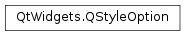

QStyleOption¶
Inherited by: QStyleOptionViewItem, QStyleOptionToolBox, QStyleOptionRubberBand, QStyleOptionComplex, QStyleOptionSpinBox, QStyleOptionSlider, QStyleOptionToolButton, QStyleOptionComboBox, QStyleOptionTitleBar, QStyleOptionGroupBox, QStyleOptionSizeGrip, QStyleOptionFocusRect, QStyleOptionFrame, QStyleOptionTabWidgetFrame, QStyleOptionTabBarBase, QStyleOptionHeader, QStyleOptionGraphicsItem, QStyleOptionButton, QStyleOptionTab, QStyleOptionToolBar, QStyleOptionProgressBar, QStyleOptionMenuItem, QStyleOptionDockWidget
Detailed Description¶
The
PySide2.QtWidgets.QStyleOptionclass stores the parameters used byPySide2.QtWidgets.QStylefunctions.
PySide2.QtWidgets.QStyleOptionand its subclasses contain all the information thatPySide2.QtWidgets.QStylefunctions need to draw a graphical element.For performance reasons, there are few member functions and the access to the member variables is direct (i.e., using the
.or->operator). This low-level feel makes the structures straightforward to use and emphasizes that these are simply parameters used by the style functions.The caller of a
PySide2.QtWidgets.QStylefunction usually createsPySide2.QtWidgets.QStyleOptionobjects on the stack. This combined with Qt’s extensive use of implicit sharing for types such asPySide2.QtCore.QString,PySide2.QtGui.QPalette, andPySide2.QtGui.QColorensures that no memory allocation needlessly takes place.The following code snippet shows how to use a specific
PySide2.QtWidgets.QStyleOptionsubclass to paint a push button:def paintEvent(self, qpaintevent): option = QStyleOptionButton() option.initFrom(self) if isDown(): option.state = QStyle.State_Sunken else: option.state = QStyle.State_Raised if self.isDefault(): option.features = option.features or QStyleOptionButton.DefaultButton option.text = self.text() option.icon = self.icon() painter = QPainter(self) self.style().drawControl(QStyle.CE_PushButton, option, painter, self)In our example, the control is a
QStyle.CE_PushButton, and according to theQStyle.drawControl()documentation the corresponding class isPySide2.QtWidgets.QStyleOptionButton.When reimplementing
PySide2.QtWidgets.QStylefunctions that take aPySide2.QtWidgets.QStyleOptionparameter, you often need to cast thePySide2.QtWidgets.QStyleOptionto a subclass. For safety, you can useqstyleoption_cast()to ensure that the pointer type is correct. For example:def drawPrimitive(self, element, option, painter, widget): if element == self.PE_FrameFocusRect: focusRectOption = QStyleOptionFocusRect(option) if focusRectOption: # ... # ...The
qstyleoption_cast()function will return 0 if the object to whichoptionpoints is not of the correct type.For an example demonstrating how style options can be used, see the Styles example.
-
class
PySide2.QtWidgets.QStyleOption(other)¶ -
class
PySide2.QtWidgets.QStyleOption([version=QStyleOption.Version[, type=SO_Default]]) Parameters: - other –
PySide2.QtWidgets.QStyleOption - type –
PySide2.QtCore.int - version –
PySide2.QtCore.int
Constructs a copy of
other.Constructs a
PySide2.QtWidgets.QStyleOptionwith the specifiedversionandtype.The version has no special meaning for
PySide2.QtWidgets.QStyleOption; it can be used by subclasses to distinguish between different version of the same option type.The state member variable is initialized to
QStyle.State_None.See also
version type
- other –
-
PySide2.QtWidgets.QStyleOption.OptionType¶ This enum is used internally by
PySide2.QtWidgets.QStyleOption, its subclasses, andqstyleoption_cast()to determine the type of style option. In general you do not need to worry about this unless you want to create your ownPySide2.QtWidgets.QStyleOptionsubclass and your own styles.The following values are used for custom controls:
Constant Description QStyleOption.SO_CustomBase Reserved for custom QStyleOptions; all custom controls values must be above this value QStyleOption.SO_ComplexCustomBase Reserved for custom QStyleOptions; all custom complex controls values must be above this value See also
type
-
PySide2.QtWidgets.QStyleOption.StyleOptionType¶ This enum is used to hold information about the type of the style option, and is defined for each
PySide2.QtWidgets.QStyleOptionsubclass.Constant Description QStyleOption.Type The type of style option provided ( SO_Defaultfor this class).The type is used internally by
PySide2.QtWidgets.QStyleOption, its subclasses, andqstyleoption_cast()to determine the type of style option. In general you do not need to worry about this unless you want to create your ownPySide2.QtWidgets.QStyleOptionsubclass and your own styles.See also
QStyleOption.StyleOptionVersion
-
PySide2.QtWidgets.QStyleOption.StyleOptionVersion¶ This enum is used to hold information about the version of the style option, and is defined for each
PySide2.QtWidgets.QStyleOptionsubclass.Constant Description QStyleOption.Version 1 The version is used by
PySide2.QtWidgets.QStyleOptionsubclasses to implement extensions without breaking compatibility. If you useqstyleoption_cast(), you normally do not need to check it.See also
QStyleOption.StyleOptionType
-
PySide2.QtWidgets.QStyleOption.version¶
-
PySide2.QtWidgets.QStyleOption.type¶
-
PySide2.QtWidgets.QStyleOption.state¶
-
PySide2.QtWidgets.QStyleOption.direction¶
-
PySide2.QtWidgets.QStyleOption.rect¶
-
PySide2.QtWidgets.QStyleOption.fontMetrics¶
-
PySide2.QtWidgets.QStyleOption.palette¶
-
PySide2.QtWidgets.QStyleOption.styleObject¶
-
PySide2.QtWidgets.QStyleOption.init(w)¶ Parameters: w – PySide2.QtWidgets.QWidgetUse
PySide2.QtWidgets.QStyleOption.initFrom()(widget) instead.
-
PySide2.QtWidgets.QStyleOption.initFrom(w)¶ Parameters: w – PySide2.QtWidgets.QWidgetInitializes the state , direction , rect , palette , fontMetrics and styleObject member variables based on the specified
widget.This is a convenience function; the member variables can also be initialized manually.
© 2018 The Qt Company Ltd. Documentation contributions included herein are the copyrights of their respective owners. The documentation provided herein is licensed under the terms of the GNU Free Documentation License version 1.3 as published by the Free Software Foundation. Qt and respective logos are trademarks of The Qt Company Ltd. in Finland and/or other countries worldwide. All other trademarks are property of their respective owners.